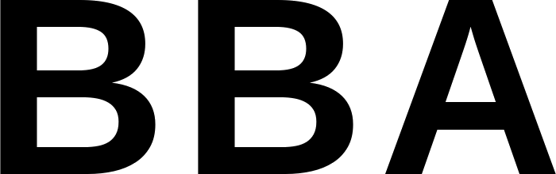
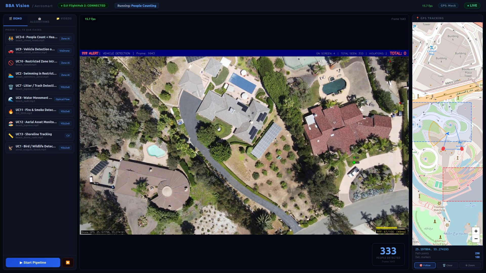
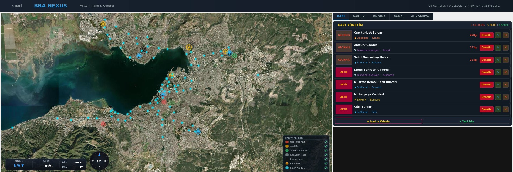

Air
DJI, PX4 and ArduPilot platforms, fixed wing and VTOL, on one mission planner.

A large site runs hundreds of cameras and two or three people in a control room. They watch what is on the wall and miss the rest, and the footage only gets opened after something has gone wrong. We put a layer on top of the cameras and the unmanned systems you already own, so the site is watched continuously and what matters reaches a person while it still matters.
Not only drones. Aircraft, ground robots, fixed cameras, gates and access control, alarm panels, patrol teams. Whoever made them, they run from one operations centre. Mission plans, live telemetry, video, a gate command, the event queue and reporting all sit on the same screen.
We do not ask you to replace what you have. The equipment stays, the layer goes on top of it.
DJI, PX4 and ArduPilot platforms, fixed wing and VTOL, on one mission planner.
Ground robots and quadrupeds for indoor patrol where flight is not permitted.
The cameras already installed, with no new hardware on site.
Gates, barriers and turnstiles, opened and logged from the same console.
This is where most of the value is, and it needs no new hardware. Your existing streams come into the same system and are read continuously.

For a port, a terminal, a refinery jetty or a coastal facility, the camera is not enough on its own. The picture, the map and the vessel track have to sit together, and a target has to be named while it is still approaching.
We are delivering exactly this to Dubai Municipality as coastal monitoring, with numerical acceptance criteria written into the tender and the system running on their own servers. The same system has been running on the bay in İzmir, and that is the one shown below.
Buildings, lines, equipment and vehicles stand in a three dimensional model in their real positions, and every object carries its own live state. Which pump is vibrating, which gate is open, where the forklift is.
An operator does not read a device code. They look at the site. A new person becomes useful in days instead of months, and a contractor sees the same picture as the owner.

Detection on its own produces noise. A system that raises four hundred alarms a day gets switched off in a week. The layer above it is what we sell.
We were awarded the security and operations platform for one of the largest retail developments in the world.
Coastal monitoring. Fifteen analyses from a single flight, on their own servers, against written numerical acceptance criteria.
Work with Turkish Petroleum and İzmir Metropolitan Municipality, and experience with the Ministry of National Defence.
Registered defence supplier, with our systems recorded under NATO stock numbers.
We do not ask you to rebuild anything to find out whether this works. Pick one site and give us the streams that are already running. At the end of the month you hold a report showing which points on your site keep producing the same problem, with the footage behind each one. That report is worth having on its own, and it is the honest way to decide whether the monthly system is worth it.
Message us on WhatsApp